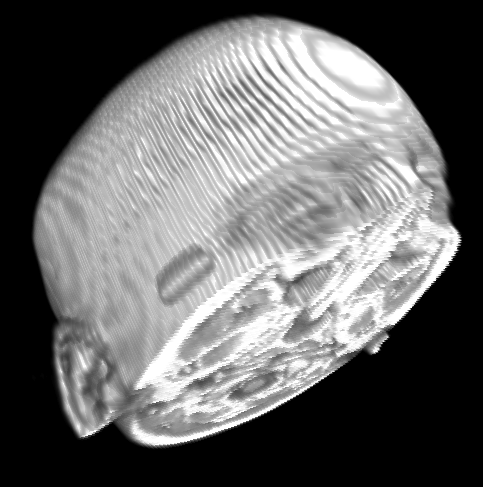

MATLAB 3D viewer demo 1
This example demonstrates how to use Miji to render a volume in 3D using accelerated graphics, if your computer is adequately equiped (most computers are, these days). We use the well known 'mri' data distributed with MATLAB, and render it in the ImageJ 3D viewer.
Contents
Make sure Java3D is installed
If not, try to install it
if ~IsJava3DInstalled(true) return end
Load and prepare data using MATLAB
Load an example of 3D data from standard Matlab
load('mri.mat');
Make a simple 8-bit 3D image from it. There is a singleton dimension to remove.
I = squeeze(D);
Ok, now this is an indexed color image (even if it is made a grays). The actual color mapping is contained in the 'map' variable. We will make a RGB image out of it.
[R G B] = ind2rgb(I, map);
Just a short note here: we are going a complicated way to regenerate a color image from an indexed image and its color mapping, because this is the way the data is shipped to us in that MATLAB sample. It is a step proper to MATLAB only, and does not affect nor relate to the Miji framework we demonstrate here. We could skip this step by directly feeding the image 'I' to MIJ, instead of the color image 'J', using another method. The colors would not be right, but would be enough to demonstrate the 3D rendering. However, let us do things properly.
An extra step to do: R, G and B now contains doubles (0 to 1), and we would like to make 3 channels of uint8 out of them.
R = uint8(255 * R); G = uint8(255 * G); B = uint8(255 * B);
We now put them together into one 3D color image (that is, with 4D). To do so, we simply concatenate them along the 3th dimension.
J = cat(4, R,G,B);
A note here: MIJ expects the dimensions of a 3D color image to be the following: [ x y z color ]; this is why we did this 'cat' operation just above. However, if you want to display the data in MATLAB's native implay, they must be in the following order: [ x y color z ]. In the latter case, 'permute' is your friend.
Configure data volume using ImageJ objects
Now we start the fun and new part. Everything so far has been only about MATLAB operations.
First, we launch Miji. Here we use the launcher in non-interactive mode. The only thing that this will do is actually to set the path so that the subsequent commands and classes can be found by Matlab. We launched it with a 'false' in argument, to specify that we do not want to diplay the ImageJ toolbar. Indeed, this example is a command line example, so we choose not to display the GUI. Feel free to experiment.
Miji(false)
The 3D viewer can only display ImagePlus. ImagePlus is the way ImageJ represent images. We can't feed it directly MATLAB data. Fortunately, that is where MIJ comes into handy. It has a function that can create an ImagePlus from a Matlab object. 1. The first argument is the name we will give to the image. 2. The second argument is the Matlab data 3. The last argument is a boolean. If true, the ImagePlus will be displayed as an image sequence. You might find this useful as well.
imp = MIJ.createColor('MRI data', J, false);
Since we had a color volume (4D data), we used the createColor method. If we had only a grayscale volume (3D data), we could have used the createImage method instead, which works the same.
Now comes a little non-mandatory tricky bit. By default, the 3D viewer will assume that the image voxel is square, that is, every voxel has a size of 1 in the X, Y and Z direction. However, for the MRI data we are playing with, this is incorrect, as a voxel is 2.5 times larger in the Z direction that in the X and Y direction. If we do not correct that, the head we are trying to display will look flat. A way to tell this to the 3D viewer is to create a Calibration object and set its public field pixelDepth to 2.5. Then we set this object to be the calibration of the ImagePlus, and the 3D viewer will be able to deal with it.
calibration = ij.measure.Calibration(); calibration.pixelDepth = 2.5; imp.setCalibration(calibration);
Display the data in ImageJ 3D viewer
Now for the display itself.
We create an empty 3D viewer to start with. We do not show it yet.
universe = ij3d.Image3DUniverse();
Now we show the 3D viewer window.
universe.show();
Then we send it the data, and ask it to be displayed as a volumetric rendering.
c = universe.addVoltex(imp);
nFrames = 1
Et voilà!

Jean-Yves Tinevez \<jeanyves.tinevez at gmail.com\> - July 2011